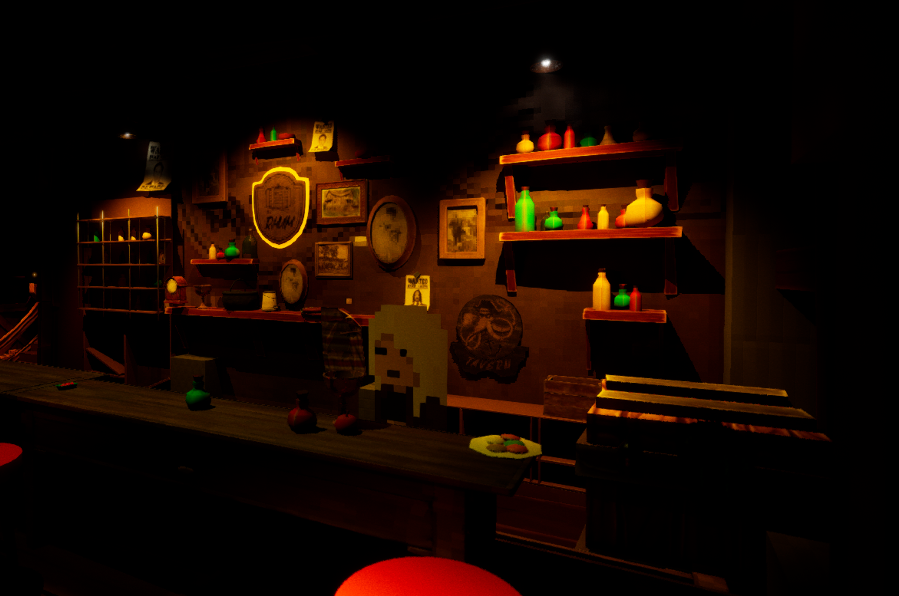
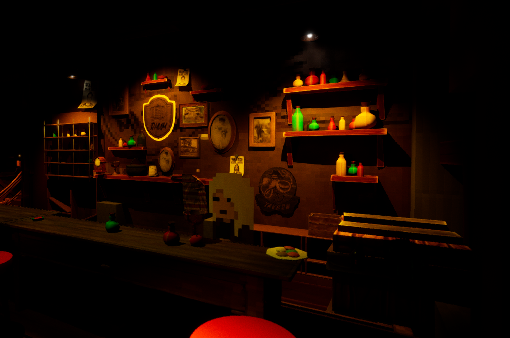

Die Again Detective is an ongoing project
Falkreath Village hides dark secrets. Every 50 years, children vanish, and a cycle of horror repeats itself.
You're Detective John Doe, and you've stumbled upon an ancient evil — Occult families performing a ritual known as "The Chalk Circle." Sacrifices to a nameless deity to preserve their power.
You interrupt their ceremony, but it's too late—you're caught, and killed. But death isn't the end.
You're trapped in a 3-day loop, waking again and again in your safehouse with only your Journal to keep track of your progress. Each loop brings new clues, deeper secrets, and darker truths.
Can you stop the ritual before the clock runs out and break the cursed cycle?
Project Info
- Role: Gameplay Programmer
- Team Members:
- Engine: Visual Studio, C++
 

Programming
As the lead programmer on this Unreal Engine 5 project, I designed and implemented core gameplay systems with a focus on player interaction, dialogue, and immersive mechanics:
Core Gameplay Systems
- Built a complete detective character with movement, camera control, and state management
- Implemented interactive systems including hiding mechanics and NPC interactions
- Created smooth camera transitions and player movement with Enhanced Input
Advanced Dialogue System
- Developed a robust dialogue system using DataTables for flexible conversation management
- Implemented branching dialogue with choice-based progression
- Integrated Gameplay Tags for tracking player progress and dialogue flags
- Created UI widgets for dialogue display and player choices
Technical Architecture
- Built modular, reusable C++ classes following object-oriented principles
- Implemented interface systems for flexible actor interactions
- Configured project build settings and target configurations
- Established clear code organization with comprehensive commenting
Ongoing Development
- Expanding dialogue tag system for complex quest tracking
- Enhancing journal/clue collection mechanics
- Optimizing interaction systems and player feedback
- Maintaining clean, documented codebase for team collaboration